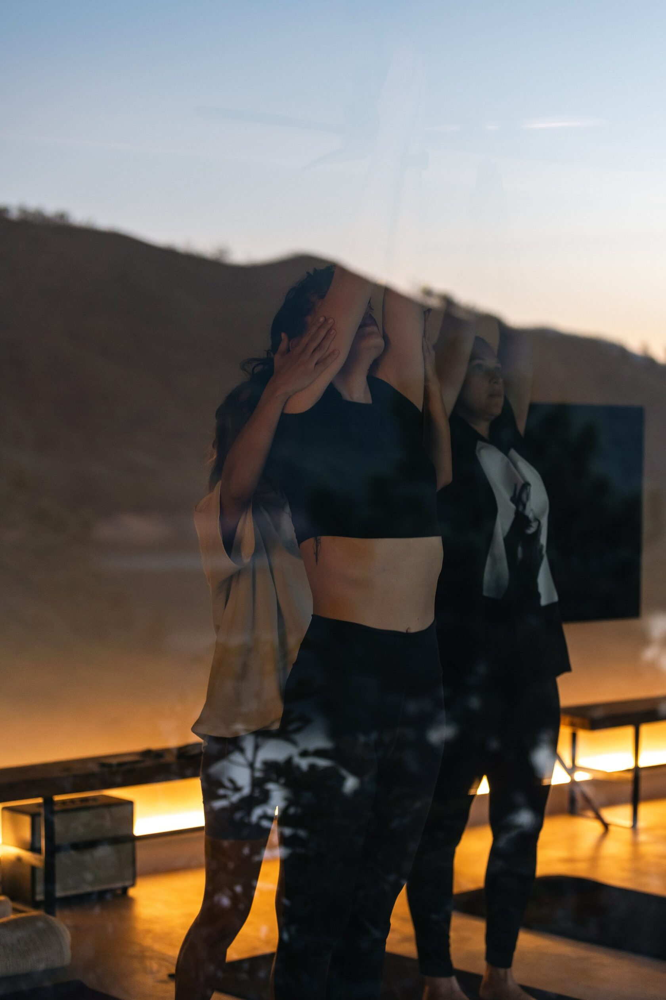
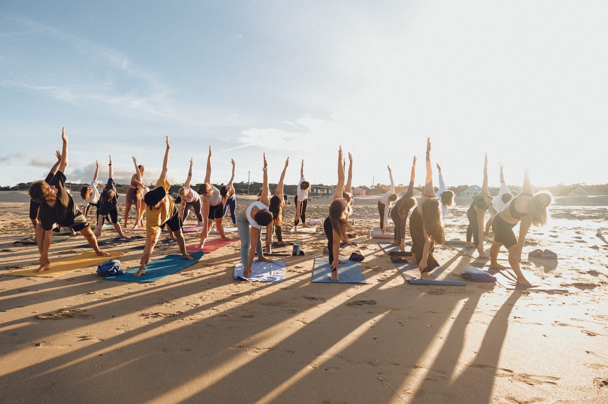
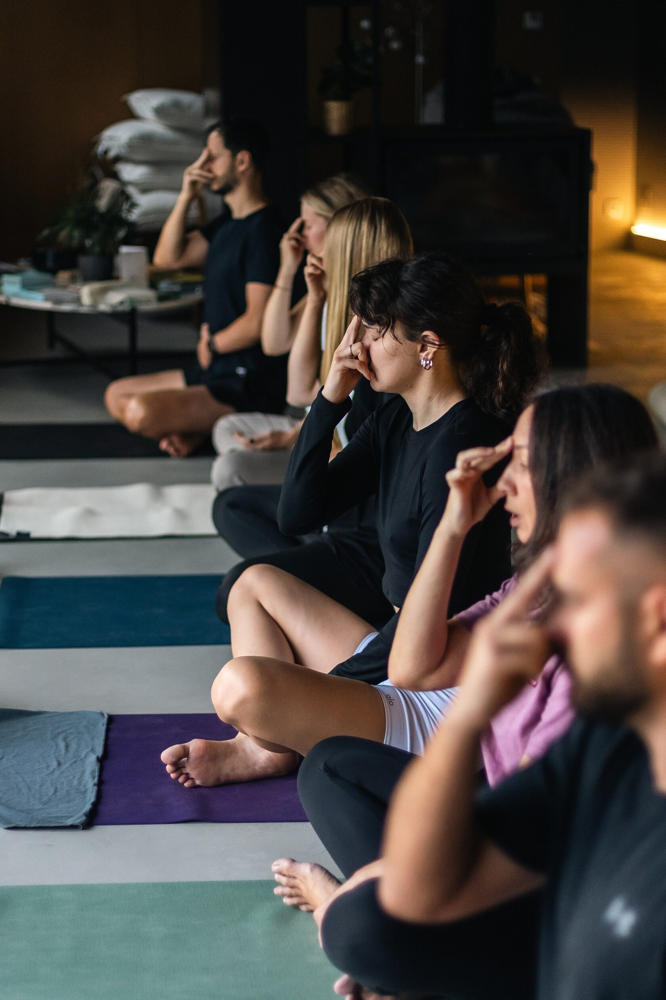
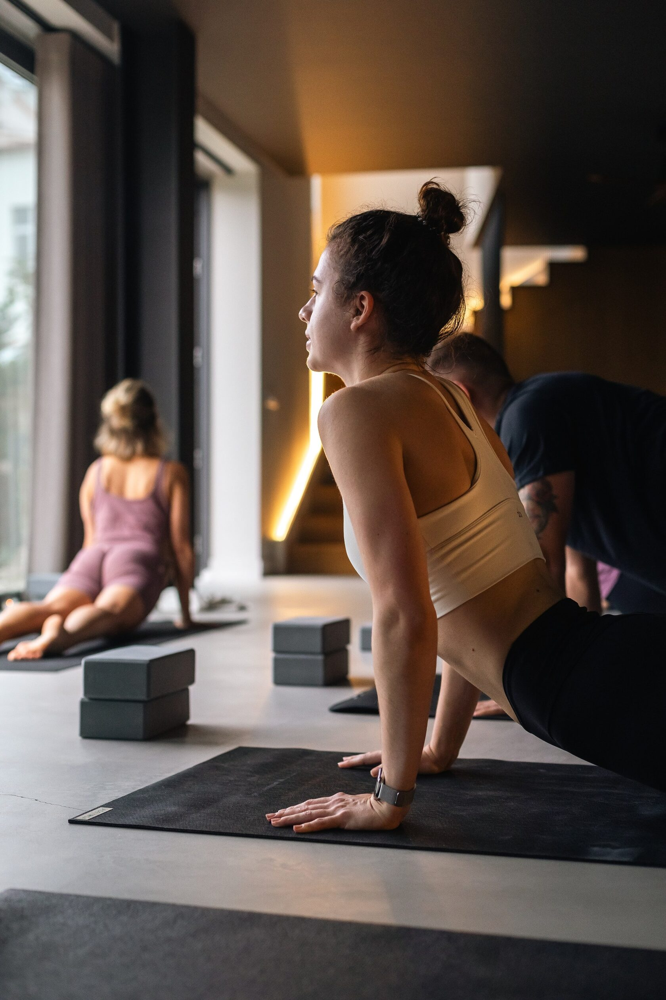
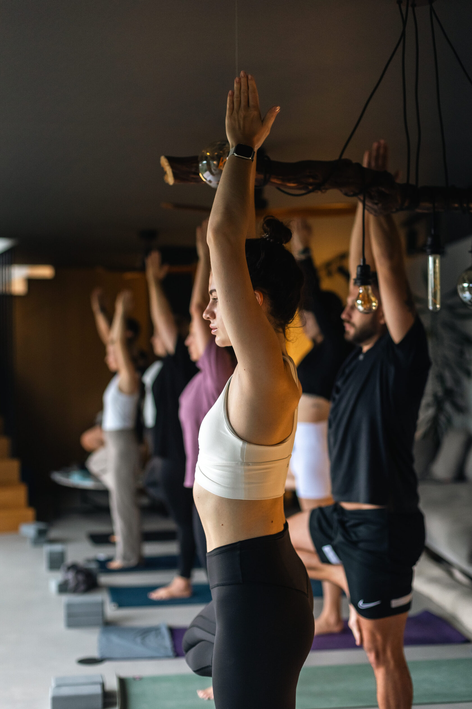
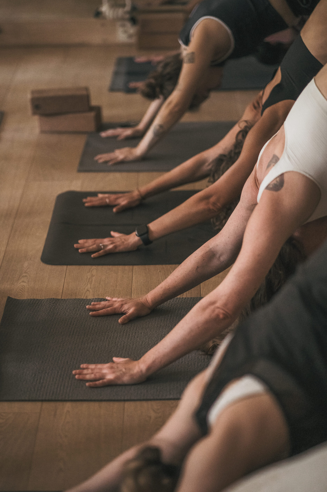
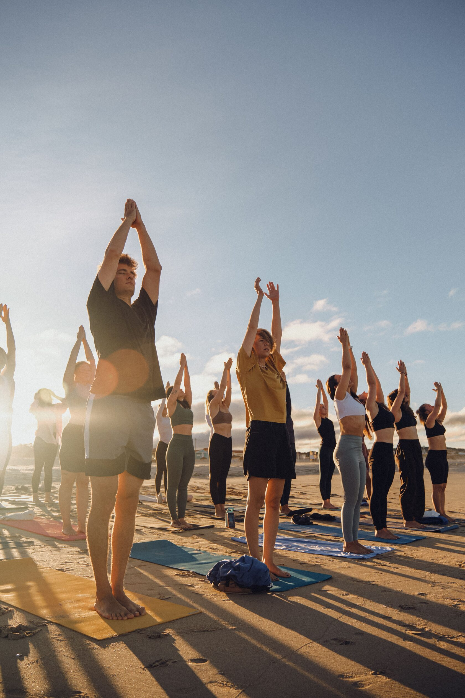
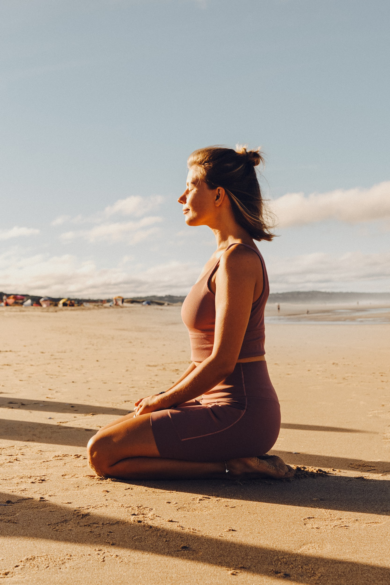
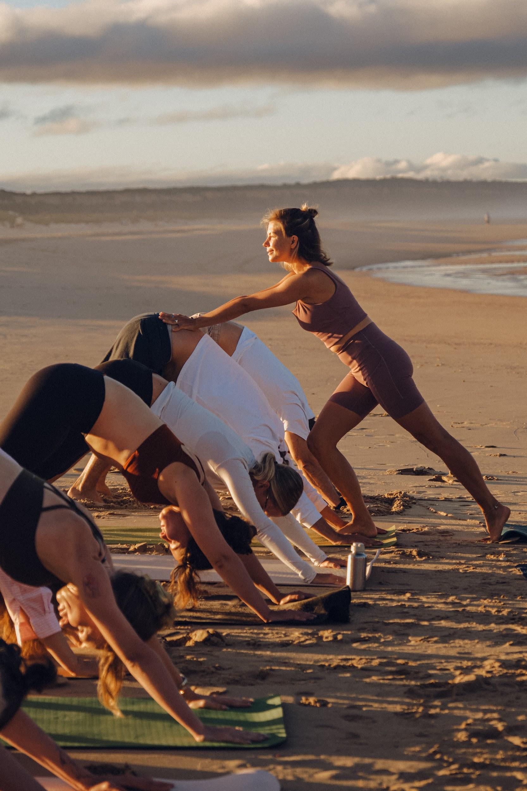

моменты





not only about yoga, but always about love
я даша — архитектор опыта, продюсер, менеджер, предприниматель, лидер, йога-тичер.
моя миссия — создавать безопасные пространства и проекты, в которых люди встречаются с собой и им становится лучше.

регулярная практика офлайн в лиссабоне и онлайн из любой точки мира, ретриты и события.
soft power yoga →
придумываю, собираю и запускаю опыты под ключ: события, ретриты, корпоративный wellbeing. консалтинг — от концепции до последней детали.
работать со мной →пятнадцать лет я строила проекты в wellbeing и спорте — в стартапах и корпорациях, от sektaschool до бренд-команды nike. в 2022 я сменила страну и посвятила себя ремеслу и созданию собственного бренда soft power, который строится вокруг йоги — практики, с которой я больше пятнадцати лет. сегодня это пространство, в котором практикуют больше 5000 человек по всему миру.
всё, что я делала в жизни — sektaschool, nike, soft power, ретриты и события — было про одно: я придумываю красивый целостный опыт целиком и провожу через него человека. концепция, смыслы, команда, пространство, визуал, музыка, путь человека внутри. это я называю архитектурой опыта.
сейчас я базируюсь в лиссабоне и открыта к международным проектам на стыке wellbeing, biohacking, longevity, телесных практик и человеческой трансформации. я адепт баланса между твёрдым и мягким и люблю соединять материальное с духовным.
моменты





«мягкость, внимание к себе и опора — именно это я получила на ретрите. каждый день был выстроен с такой заботой, что хотелось остаться навсегда.»

«занималась с Дашей онлайн, живя в другом часовом поясе. практика стала ритмом, который держит. не спорт — что-то гораздо глубже.»

«работала с Дашей как ментором. она увидела суть того, что я делаю, помогла сформулировать и выстроить. без давления, с настоящим интересом.»
йога-тичер, предприниматель, продюсер, менеджер и лидер. пятнадцать лет я строила проекты вокруг wellbeing и спорта, а потом ушла в ремесло и стала преподавать под своим брендом. в какой-то момент я поняла, что не хочу разделять роли: я создаю опыт. иногда он выглядит как класс йоги — иммерсивная практика с живой музыкой в старинном театре. иногда как корпоративная программа или ретрит. форма меняется, суть остаётся.
мой бренд и моя философия. мягкая сила — это когда ты меняешь людей не давлением, а пространством, в котором им безопасно меняться самим. под этим именем живут практики в лиссабоне и онлайн, подписка, ретриты, события и мерч. сегодня в soft power практикуют больше 5000 человек по всему миру.
пятнадцать лет в wellbeing и спорте. я была ceo московского филиала sektaschool: создавала и управляла командами, открывала залы и филиалы, делала значимые партнёрства — афиша, vogue, condé nast и генеральное партнёрство с nike. затем пять лет была частью бренд-команды nike и руководила проектом nike box msk: команда, ивенты, спортивные партнёрства, интеграции, международный продакшен. в 2022 я ушла из корпорации, переехала в португалию и стала развивать soft power.
не организатор мероприятий. точка. моя работа — создать целостный опыт для продукта или события, онлайн или офлайн, так, чтобы этот опыт действительно изменил человека, который с ним столкнулся. концепция, смыслы, команда, пространство, визуал, музыка, продвижение и путь человека внутри — всё это одна система.
да. событие или ретрит под ключ, корпоративную wellbeing-программу, консалтинг или стратегическую сессию. а ещё можно позвать меня поговорить о твоём продукте — мы найдём точку взаимодействия, если у нас общие ценности.
с компаниями, которым нужен не просто тимбилдинг с мастермайндами, а настоящий контакт. с людьми, которые твёрдо стоят на ногах и осознают ценность духовной практики. со студиями и фаундерами wellbeing-проектов. и с теми, кто приходит на коврик.
никуда. йога — моя ежедневная практика больше пятнадцати лет. я обучалась у преподавателей по всему миру, участвовала в международных саммитах и tribe gatherings в париже и барселоне, продолжаю учиться постоянно и практикую ежедневно. йога — лишь одна из моих граней.
международные проекты на стыке wellbeing, longevity, биохакинга, ai, телесных практик и креатива. партнёрства с компаниями и брендами, для которых люди — не строчка в бюджете. события и пространства мирового уровня. и людей, с которыми хочется строить — избирательно, но всем сердцем.
да. даже отпуск для родителей я задизайнила как уникальный опыт — от первого шага до последнего: маршрут, ритм, впечатления, сюрпризы. посмотреть и вдохновиться. архитектура опыта — это не работа, это способ смотреть на мир.
базируюсь в лиссабоне, работаю по всему миру: онлайн, гибридно или прилечу — если проект того стоит.
проще всего — телеграм: t.me/beloved_dasha. расскажи, что у тебя за идея или задача, — отвечу лично.
об этом не принято говорить на интервью, но я верю: когда мы заходим в общий проект или опыт, важно быть созвучными. так вот, в моём бэкграунде есть:
мне нравится создавать пространство, где человек через практику может встретиться с собой. мне интересно придумывать уникальный опыт и укутывать в него людей — думать, как сделать полезнее, лучше, красивее и интереснее.